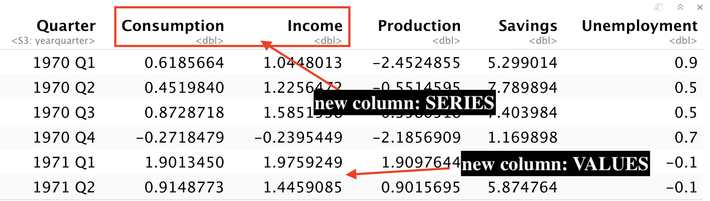
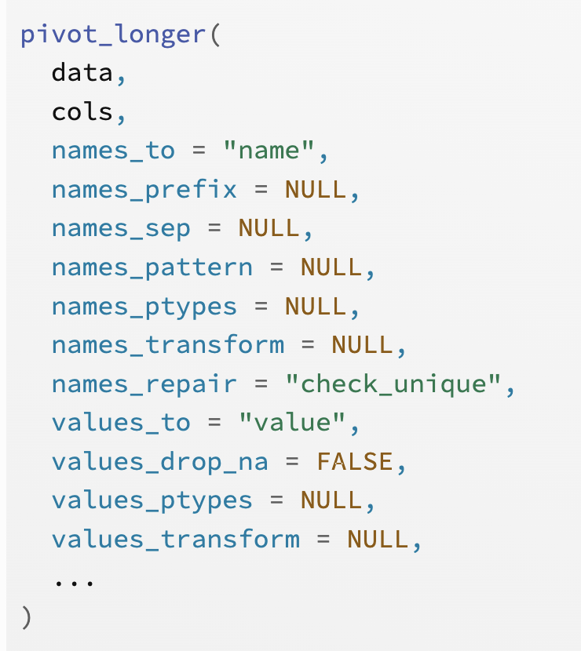
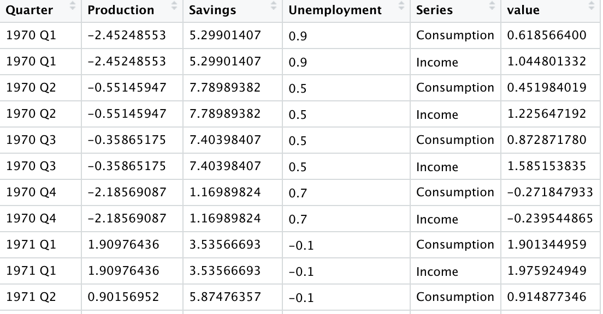
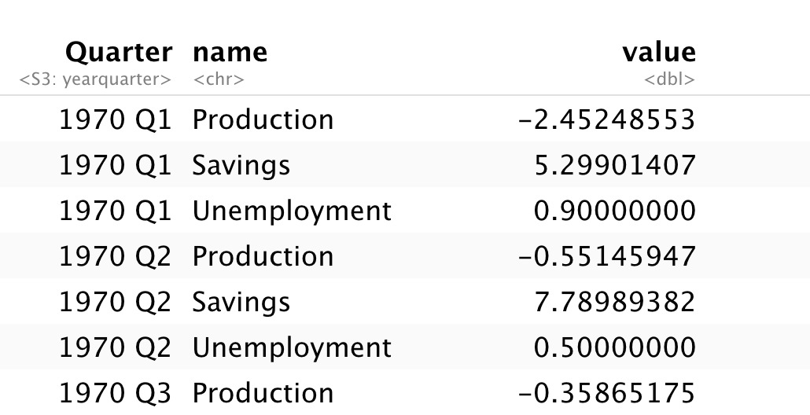
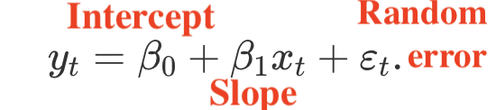
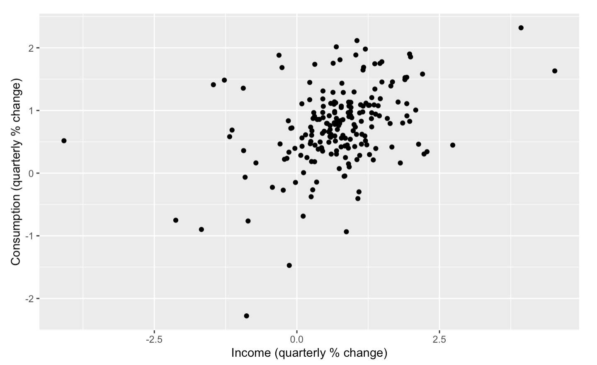
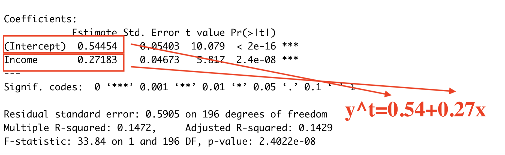

Regression Models¶
Introduction to Time Series Forecasting with Python. Jason Brownlee.
Forecasting: Principle and practice. Chapter 7. Rob Hyndman and George Athanasopoulos.
Purpose¶
Trends in time series can be classified as stochastic or deterministic.
Stochastic:
Data shows inexplicable changes in direction (attributed with random errors)
Trends of this type (common in financial series) can be simulated using random walk or autoregressive process
Deterministic:
Data shows some plausible physical explanation for a trend (increasing population, seasonal frequency)
Deterministic trends and seasonal variation can be modelled using regression
Extrapolation
We extrapolate (extend) deterministic trends when we make forecasts
Short-term extrapolation justification: underlying trends will usually change slowly
Short-term extrapolation should be based on a line (fitted to the more recent data only)
Data Transformation with pivot¶
pivot_longer()“lengthens” data, increasing the number of rows and decreasing the number of columns.
commonly used to tidy datasets as they often optimise for ease of data entry or ease of comparison rather than ease of analysis.


pivot_longer(us_change, c(Consumption, Income), names_to="Series")
The first argument is the dataset to reshape. But with %>% pipe that passes data we do not need to specify data set as the first argument
us_change %>%
pivot_longer(c(Consumption, Income), names_to="Series")
The second argument describes which columns need to be reshaped. In this case, it is
ConsumptionandIncomeThe
names_togives the name of the variable that will be created from the data stored in the column namesThe
values_togives the name of the variable that will be created from the data stored in the cell value, i.e. count. Default isvalue

us_change %>%
select(-Consumption, -Income) %>%
pivot_longer(-Quarter)
Instead of typing what columns to include, we can use
-(minus) to drop columnsIf we do not specify
names_toandvalues_to, default is name and value

Note
When you use facet_grid(), you can specify the layoout with the following syntaxt: vertical ~ horizontal. For example, facet_grid(name ~ .) means split variables (factors’ names) in the vertical direction, with the rest (.) in the horizontal direction.
Example from the chapter:
Simple Linear Regression¶
the simple linear regression model: a linear relationship between the forecast variable y and a single predictor variable x

Use a scatter plot to determine the type of relation: positive linear relationship between consumption changes against income changes

tslm()is a wrapper for lm() except that it allows variables “trend” and “season” which are created on the fly from the time series characteristics of the data. The variable “trend” is a simple time trend and “season” is a factor indicating the season
tslm(formula, data, subset, lambda = NULL, biasadj = FALSE, ...)
us_change %>%
model(TSLM(Consumption ~ Income)) %>%
report()

Multiple Linear Regression¶
We have two or more predictors x and y to be forecast. Each of the predictor variables must be numerical.
Scatterplot matrix with ggpairs():
Scatterplots of each pair of numeric variable are on the left
Pearson correlation is displayed on the right (relations’ strength)
Variable distribution is available on the diagonal
The first column shows the relationships between the forecast variable and each of the predictors
The remaining columns - the relationships between predictors
library(GGally)
us_change %>%
ggpairs(columns = 2:6)
us_change %>%
model(tslm = TSLM(Consumption ~ Income + Production + Unemployment + Savings))